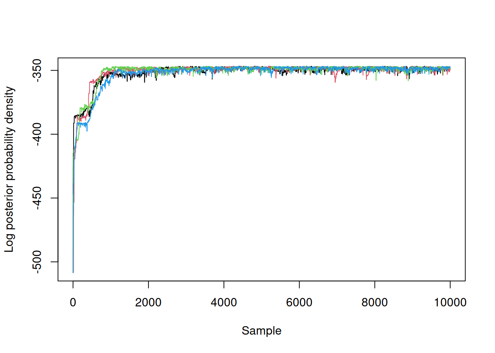

# Read the data
original_data <- rowSums(read.csv(file = "data/flu_2009.csv"))
# Create the data frame and add days as time
data <- data.frame(
time = seq(7, by = 7, length.out = length(original_data)),
cases = original_data
)16 2009 pandemic in the UK
16.1 Introduction
The 2009 A/H1N1 influenza pandemic (Ghani et al. 2009) posed a significant public health challenge in England and Wales, requiring rapid and evidence-based decision-making to mitigate its impact (Baguelin et al. 2010). This chapter explores the use of odin and monty to model the dynamics of the 2009 A/H1N1 influenza pandemic in England and Wales, incorporating changes in social contacts during holiday periods. We demonstrate how to construct, fit, and analyse a compartmental model to infer key epidemiological parameters.
16.1.1 Objective of this chapter
The chapter is structured to guide the reader through an entire modelling pipeline, from data preparation and visualisation to model construction, parameter inference, and validation. Along the way, we highlight the integration of real-world data, discuss challenges in linking models to observed cases, and showcase the use of Bayesian methods for robust parameter estimation.
16.1.2 Overview of the pipeline
This chapter illustrates how to:
- Construct an SEIR transmission model with time-varying contact rate using
odin - Implement a (probabilistic) observation model in
odin - Derive a likelihood based on observations using
dustand convert it tomonty - Built a prior distribution for the model parameters using the
montyDSL - Run Bayesian inference using adaptive Markov chain Monte Carlo (MCMC) with
monty - Analyse and interpret the MCMC results.
16.1.3 Key parameters of interest
We are interested in particular in two epidemiological parameters:
- The basic reproduction number \(R_0\) of the novel influenza strain;
- The ascertainment probability, i.e., the proportion of total infections reported as cases.
16.2 Data preparation and visualisation
Data is the number of weekly cases of A/H1N1 pandemic cases from June 2009, and initially broken up into seven age-groups. For simplicity, we aggregate the data into a single time series for this analysis.
16.2.1 Loading data
The data file is taken from the supplement material in (Endo, Leeuwen, and Baguelin 2019) and can be found here.
We will fit our model to all cases aggregated so we need to load our data, add the age-group using rowSums, and then build a dataframe (a table where each rows is an observations of certains variables in the columns) with ‘days’ and ‘cases’.
16.2.2 Plotting the data
You can plot the data and see the two waves of infections and the presence of holiday periods (note that only the first part of the plotting code is shown here for clarity - look at source for full plotting code).
plot(data$time, data$cases, pch = 19, col = "red",
xlab = "Days since start of epidemics",
ylab = "Official cases count",
main = "Cases over Time with Holiday Periods",
ylim = c(0, max(data$cases) * 1.3), # Add padding to the y-axis
xlim = c(min(data$time), max(data$time)))16.3 Model design
16.3.1 Transmission model
Similarly to the SIR model, we saw already, the SEIR model divides the population into four compartments:
- Susceptible: Individuals at risk of infection.
- Exposed: Infected individuals who are not yet infectious.
- Infectious: Actively transmitting the disease.
- Recovered: Immune individuals.
Additionally, the model incorporates time-varying transmission rates to account for changes in contact patterns during holidays.
The SEIR model is governed by the following system of ordinary differential equations:
\[ \left\{ \begin{aligned} \frac{dS}{dt} &= - \beta(t) \frac{S I}{N} \\ \frac{dE}{dt} &= \beta(t) \frac{S I}{N} - \sigma E \\ \frac{dI}{dt} &= \sigma E - \gamma I \\ \frac{dR}{dt} &= \gamma I \end{aligned} \right. \]
where:
- \(\beta(t)\) is the time-dependent transmission rate, representing the rate at which susceptible individuals become exposed through contact with infectious individuals.
- \(\sigma\) is the rate at which exposed individuals transition to the infectious stage (the inverse of the latency period).
- \(\gamma\) is the recovery rate, indicating the rate at which infectious individuals recover or are removed from the infectious population.
- \(N\) is the total population size, assumed to remain constant.
- \(S(t)\), \(E(t)\), \(I(t)\), and \(R(t)\) represent the number of susceptible, exposed, infectious, and recovered individuals, respectively, at time \(t\).
We assume that the contact rate is constant outside of the holiday period, dropping by 30% during the summer and 15% during the half-term. To parameterise the model, we use the basic reproduction number \(R_{0}\), which represents the average number of secondary infections caused by one infected individual in a fully susceptible population. Using the relationship \(R_{0} = \beta / \gamma\) and interpreting \(h(t)\) as a piecewise constant function equal to 0.7 during the summer, 0.85 during the half-term, and 1 otherwise, we define:
\[\beta(t) = R_{0} \cdot \gamma \cdot h(t).\]
To seed the model we assume that a small proportion of the population is infected - equally shared between the E and I compartments. The initial conditions are thus:
\[ \begin{aligned} S(0) &= (1 - 2 \alpha) N \\ E(0) &= \alpha N \\ I(0) &= \alpha N \\ R(0) &= 0 \\ \end{aligned} \]
16.3.2 Observation model
The fundamental component of our transmission model is the ‘I’ compartment tracking continuously the number of infectious people in our population (an infection prevalence). However, what we observe through our surveillance system is a fraction of the weekly total incidence, more precisely an estimate of the number of new cases in a period of 7 days (a week).
In our odin model we can track the weekly cumulative incidence \(Z(t)\) by:
- adding a differential equation integrating the instantaneous incidence:
\[\frac{dZ}{dt} = \sigma E\]
- resetting \(Z(t) = 0\) at the beginning of each week to only account for the new cases from the current week.
Then we get for each \(t\) that is a multiple of 7 (i.e. when we change week):
\[Z(t) = \int_{t-7}^{t} \sigma E(s) \ ds\]
i.e. the cumulative incidence over a week.
Finally, we need to account for the imperfection of the surveillance system, assuming that only a fraction \(\rho\) of the infections are captured by the surveillance system and accounting for potential overdispersion we define the following observation model using a negative binomial distribution with mean \(\mu = \rho Z(t)\) and size \(\eta\):
\[ \text{cases(t)} \sim \text{NegativeBinomial}(\text{size} = \eta, \mu = \rho Z(t)), \]
where \(\rho\) is the ascertainment probability, and \(\eta\) is the dispersion parameter.
Note
Even if the surveillance system was perfect we would expect a difference between the number of symptomatic cases and the number of infections as a proportion of flu cases are asymptomatic or ‘pauci-symptomatic’ (showing very few symptoms).
16.3.3 Summary of model parameters
A summary of the parameters of our model:
- \(R_{0}\), the basic reproduction number,
- \(\alpha\), the proportion of the population infected at the start of the epidemic,
- \(\sigma\), the inverse of the mean incubation period set to 1 day,
- \(\gamma\), the recovery rate, the inverse of the mean recovery time assumed to be 1.25 days,
- \(h(t)\), the reduction of contact due to holidays, assumed piecewise constant,
- \(\rho\), the ascertainment probability i.e. the proportion of infections we expect to ascert as cases,
- \(\eta\), the size parameter of our Negative Binomial observation model,
- \(N\) the total size of the population in England and Wales in 2009.
Among these parameters, \(R_{0}\), \(\alpha\), \(\rho\), and \(\eta\) are treated as “unknown” and inferred using our Bayesian pipeline.
16.3.4 Odin code of the model
library(odin2)
library(dust2)
library(monty)Below is the odin code for our model - the structure matches closely the mathematical formulation we derived in the previous section. Note the cases <- data() lines telling that cases are observations though the model will compile and work even if not linked with any dataset. However providing data is essential to compute a likelihood with dust or derive a monty likelihood statistical model of our system.
The compilation step takes time. The model needs to be first transpiled (e.g. translated from one programming language to another) in order to create some C++ code and then that code is compiled and loaded in the R environnment. After this, a “fast” model can be called from the R environment and used to simulate scenarios or perform inference.
seir <- odin2::odin({
# initial conditions
initial(S) <- (1 - 2 * alpha) * N
initial(E) <- alpha * N
initial(I) <- alpha * N
initial(R) <- 0
initial(incidence, zero_every = 7) <- 0
# equations
deriv(S) <- - hol * beta * S * I / N
deriv(E) <- hol * beta * S * I / N - sigma * E
deriv(I) <- sigma * E - gamma * I
deriv(R) <- gamma * I
deriv(incidence) <- sigma * E
# parameter values
R_0 <- parameter(1.5)
L <- 1
D <- 1.25
alpha <- parameter(1e-4) # initial proportion
N <- parameter(55000000) # total population
# convert parameters
hol <- interpolate(h_times, h_values, "constant")
h_times <- parameter()
h_values <- parameter()
dim(h_times) <- parameter(rank = 1)
dim(h_values) <- length(h_times)
gamma <- 1 / L
sigma <- 1 / D
beta <- R_0 * gamma
# observation model
rho <- parameter(0.1)
eta <- parameter(10)
cases <- data()
cases ~ NegativeBinomial(size = eta, mu = rho * incidence)
})16.3.5 Running the model
Once the model is compiled, it is possible to generate one (or more!) instance of your model by using the dust_system_create() and your model generator.
mod <- dust_system_create(seir,
pars = list(h_times = hol_t, h_values = hol_v))Then parameters can be passed to the model using a list with the dust_system_update_pars() function.
pars <- list(
alpha = 2e-5,
R_0 = 1.3,
rho = 0.1,
eta = 10,
N = 55000000,
h_times = hol_t,
h_values= hol_v
)
dust_system_update_pars(sys = mod, pars = pars)Then the model can be run by specifying the time points between which to integrate the ODEs. Note that the first point (here 0) set the inital time of the integration. Once the time vector t is defined we can run the model by using the dust_system_simulate() function.
t <- c(0,data$time)
dust_system_set_state_initial(mod)
y <- dust_system_simulate(mod, t)Let’s plot the incidence compartment over time.
plot(t, dust_unpack_state(mod, y)$incidence, type = "l", col = "#000088ff")It looks a bit like the actual epidemic; a good sign, but let’s compare our model with the data.
plot(data$time, data$cases,
xlab = "Days since start of epidemics",
ylab = "Official estimates of cases",
pch = 19,
col = "red",
ylim = c(0, max(data$cases) * 1.5))
lines(t, dust_unpack_state(mod, y)$incidence * pars$rho, col = "#000088ff")We seem to be overestimating the expected number of cases by a factor two or so, but the MCMC pipeline should allow us to infer the distribution of the parameters consistent with the observations.
16.4 The MCMC pipeline
We now have a dataset and a working model, all loaded in our R environment. We need to link the output of this model with the data in order to derive a likelihood function. As we are working within a Bayesian framework we also need to define the prior distribution for our parameters.
16.4.1 Setting up the likelihood
The likelihood is a function that takes a parameter as argument and return the probability density that our model (transmission model + observation) generates exactly the observed data. This number is usually very small as it is the product of each individual observation density given the model. Remember that functionns log-densities (rather than densities) and that products then become sums and divisions become differences. So for example if we need to compute a ratio a densities, we would substract the relevant log-densities and then exponentiate the result.
filter <- dust_unfilter_create(seir, data = data, time_start = 0)
dust_likelihood_run(filter, pars)
#> [1] -503.2286
Note
To create the likelihood dust expect a “time” column in the data, that tells the timepoints where the model output needs to be compared with the observations.
This is the likelihood associated with the dust model written using the odin DSL. We now need to move this into the monty statistical world to be able to integrate this into our pipeline. For this, we use the packer concept (see Section 14.2) that allows us to define a one-to-one translation between the two worlds.
packer <- monty_packer(c("alpha", "R_0", "rho", "eta"),
fixed = list(h_times = pars$h_times,
h_values = pars$h_values,
N = pars$N))Now building the monty model for the likelihood of the model is very easy:
likelihood <- dust_likelihood_monty(filter, packer, save_trajectories = TRUE)16.4.2 Setting up the prior distribution
We similarly set up a log-prior function. Note that we use the function to exclude impossible values such as a proportion below 0 or above 1. This is to avoid to getting a log-density of -Inf given that these values would have a density value of 0 (=impossible).
We can construct the prior with monty_dsl, note that the names are matching the parameters from the likelihood as it should be.
prior <- monty_dsl({
alpha ~ Beta(a = 4e-4, b = 2)
R_0 ~ Gamma(2, 0.7)
rho ~ Uniform(0, 1)
eta ~ Exponential(mean = 1000)
})Let’s inspect our prior monty model
prior
#>
#> ── <monty_model> ───────────────────────────────────────────────────────────────
#> ℹ Model has 4 parameters: 'alpha', 'R_0', 'rho', and 'eta'
#> ℹ This model:
#> • can compute gradients
#> • can be directly sampled from
#> • accepts multiple parameters
#> ℹ See `?monty_model()` for more informationAs it has been built using the monty DSL, it comes with gradient calculation, direct sampling (so no need to use one of the Monte Carlo algorithm) and accepts multiple parameters.
Let’s try to generate samples and check that they match our prior distribution:
n_streams <- 10000
r <- monty_rng_create(n_streams = n_streams)
prior_samples <- matrix(monty_model_direct_sample(prior, r), nrow = n_streams)
colnames(prior_samples) <- prior$parametersbayesplot::mcmc_pairs(prior_samples)
#> Warning: Only one chain in 'x'. This plot is more useful with multiple chains.
16.4.3 Setting up the posterior
Our posterior is the product of the likelihood and prior, or its log is the sum of their logs:
posterior <- likelihood + prior16.4.4 Chosing the sampler
Next, we define a sampler; as, we have little information about the scale and structure of our posterior, we’ll use an adaptive sampler with a simple and fairly arbitrary variance-covariance matrix with a low weight to generate the initial random walk:
vcv <- diag(c(5e-10, 5e-5, 1e-5, 1))
sampler <- monty_sampler_adaptive(vcv, initial_vcv_weight = 10)We start this off, using explicit initial conditions based on the value we tested earlier:
samples <- monty_sample(posterior,
sampler,
10000,
initial = packer$pack(pars),
n_chains = 4)
#> ⡀⠀ Sampling [▁▁▁▁] ■ | 0% ETA: 4m
#> ⠄⠀ Sampling [▁▁▁▁] ■ | 0% ETA: 1m
#> ⢂⠀ Sampling [▂▁▁▁] ■■■ | 5% ETA: 1m
#> ⡂⠀ Sampling [▄▁▁▁] ■■■■ | 11% ETA: 1m
#> ⠅⠀ Sampling [▅▁▁▁] ■■■■■■ | 16% ETA: 48s
#> ⢃⠀ Sampling [▆▁▁▁] ■■■■■■■ | 21% ETA: 46s
#> ⡃⠀ Sampling [█▁▁▁] ■■■■■■■■■ | 26% ETA: 43s
#> ⠍⠀ Sampling [█▂▁▁] ■■■■■■■■■■ | 31% ETA: 40s
#> ⢋⠀ Sampling [█▄▁▁] ■■■■■■■■■■■■ | 37% ETA: 37s
#> ⡋⠀ Sampling [█▅▁▁] ■■■■■■■■■■■■■■ | 42% ETA: 34s
#> ⠍⠁ Sampling [█▇▁▁] ■■■■■■■■■■■■■■■ | 47% ETA: 31s
#> ⢋⠁ Sampling [██▁▁] ■■■■■■■■■■■■■■■■ | 51% ETA: 29s
#> ⡋⠁ Sampling [██▂▁] ■■■■■■■■■■■■■■■■■■ | 57% ETA: 25s
#> ⠍⠉ Sampling [██▄▁] ■■■■■■■■■■■■■■■■■■■■ | 62% ETA: 22s
#> ⠋⠉ Sampling [██▅▁] ■■■■■■■■■■■■■■■■■■■■■ | 67% ETA: 19s
#> ⠋⠉ Sampling [██▇▁] ■■■■■■■■■■■■■■■■■■■■■■■ | 72% ETA: 16s
#> ⠉⠙ Sampling [███▁] ■■■■■■■■■■■■■■■■■■■■■■■■ | 77% ETA: 14s
#> ⠉⠙ Sampling [███▃] ■■■■■■■■■■■■■■■■■■■■■■■■■■ | 82% ETA: 10s
#> ⠉⠩ Sampling [███▄] ■■■■■■■■■■■■■■■■■■■■■■■■■■■ | 87% ETA: 7s
#> ⠈⢙ Sampling [███▅] ■■■■■■■■■■■■■■■■■■■■■■■■■■■■■ | 93% ETA: 4s
#> ⠈⡙ Sampling [███▇] ■■■■■■■■■■■■■■■■■■■■■■■■■■■■■■ | 98% ETA: 1s
#> ✔ Sampled 40000 steps across 4 chains in 58.6s
#>
Note
We have used explicit initial conditions here, which might not be what you want in all situations. It might be better to sample from the prior, but we have not yet implemented support to try a few points from the sample before getting a point with finite density, which is really needed here.
Here the log-posterior density of our three chains over time, showing a rapid improvement in the posterior probability density followed by what might be reasonable (but not great) mixing:
matplot(samples$density, type = "l", lty = 1,
xlab = "Sample", ylab = "Log posterior probability density")
length(unique(samples$density)) / length(samples$density)
#> [1] 0.6552We will thin the samples, removing the first 2000 iterations from each chain and then thinning by a factor of 32 to produce a sample size of 1000.
samples <- monty_samples_thin(samples, thinning_factor = 32, burnin = 2000)We can use the posterior package to summarise the fitted parameters and provide convergence diagnostics and bayesplot for pairs plots:
samples_df <- posterior::as_draws_df(samples)
posterior::summarise_draws(samples_df)
#> # A tibble: 4 × 10
#> variable mean median sd mad q5 q95 rhat ess_bulk
#> <chr> <dbl> <dbl> <dbl> <dbl> <dbl> <dbl> <dbl> <dbl>
#> 1 alpha 0.00000905 9.04e-6 1.06e-6 1.04e-6 7.33e-6 1.08e-5 1.03 310.
#> 2 R_0 1.37 1.37e+0 1.11e-2 1.10e-2 1.36e+0 1.39e+0 1.03 304.
#> 3 rho 0.0392 3.92e-2 1.75e-3 1.73e-3 3.65e-2 4.22e-2 0.999 410.
#> 4 eta 16.1 1.58e+1 3.53e+0 3.41e+0 1.06e+1 2.26e+1 1.04 90.0
#> # ℹ 1 more variable: ess_tail <dbl>bayesplot::mcmc_pairs(samples_df)Finally we can get an idea of the fit of the samples by producing a plot comparing the fitted trajectories to the data.
y <- dust_unpack_state(filter, samples$observations$trajectories)
## Resize the array to remove the chains dimension
incidence <- array(y$incidence, c(nrow(data), 1000))
## Multiply incidence by fitted value of rho to give modelled cases
rho <- c(samples$pars["rho", , ])
cases_modelled <- t(incidence) * rho
matplot(data$time, t(cases_modelled), type = "l", lty = 1, col = "#00008822",
xlab = "Time", ylab = "Cases")
points(data$time, data$cases, pch = 19, col = "red")